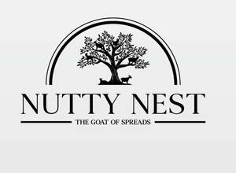
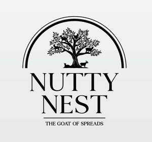

Trade Mark Journal No.2025/027 4 July 2025
UK00004201402 9 May 2025 (29,30,31)
Mark 1

Mark 2

Mark 3

- Class 29
- Peanut spread; Hazelnut spread; Hazelnut spreads; Nut-based spreads; Nut paste spreads; Vegetable spreads; Cashew nut butter; Cacao butter for food; Chocolate nut butter; Butter (Chocolate nut -); Almond oil for food; Nut oils for food; Nut-based food bars; Cocoa butter for food; Peanut oil [for food]; Peanut oil for food; Jellies, jams, compotes, fruit and vegetable spreads; Roasted nuts; Almond butter; Organic nut and seed-based snack bars; Mixtures of fruit and nuts; Powdered nut butters; Coated peanuts; Peanut milk; Nuts being cooked; Dried nuts; Nuts being dried; Olives stuffed with pesto in sunflower oil; Peanut butter; Butter (Peanut -); Snack foods based on nuts; Honeyed peanuts; Coconut oil and fat [for food]; Nut and seed-based snack bars; Olives stuffed with almonds; Nut-based snack foods; Spiced nuts; Almond milk; Lemon spread; Fruit spreads; Vegetable-based spreads; Butter made of nuts; Roasted peanuts; Flavored nuts; Flavoured nuts; Snack mixes consisting of dehydrated fruit and processed nuts.
- Class 30
- Chocolate spread; Chocolate spreads; Chocolate spreads containing nuts; Sandwich spread made from chocolate and nuts; Chocolate spreads for use on bread; Chocolate-based spreads; Cocoa based creams in the form of spreads; Sweet spreads [honey]; Almonds covered in chocolate; Chocolate coated nuts; Chocolate coated macadamia nuts; Chocolate covered biscuits; Chocolate drink preparations flavoured with nuts; Peanut butter confectionery chips; Chocolate coated fruits; Chocolate covered cakes; Chocolate covered wafer biscuits; Chocolate-coated nuts; Foods with a cocoa base; Dried sugared cakes of rice flour (rakugan).
- Class 31
- Fresh cashew nuts; Fresh pistachio nuts.
Saeed Khilji